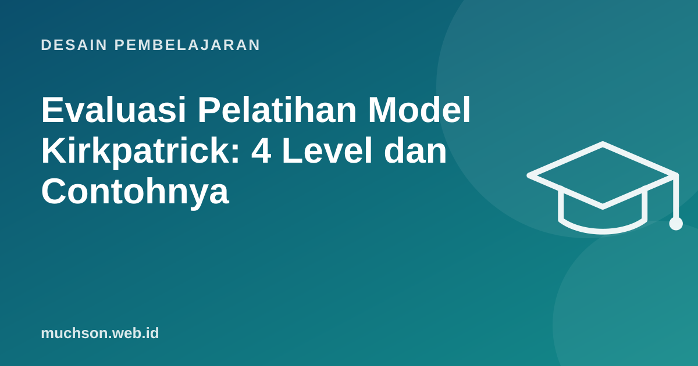

Beranda › Artikel › Desain Pembelajaran
Desain PembelajaranEvaluasi Pelatihan Model Kirkpatrick: 4 Level dan Contohnya
Banyak program pelatihan hanya dievaluasi dengan satu formulir di akhir: "Seberapa puas Anda dengan pelatihan ini?" Skornya tinggi, semua senang, tetapi tidak ada yang tahu apakah pekerjaan benar-benar berubah. Model Kirkpatrick, diperkenalkan Donald Kirkpatrick pada 1959, memberi kerangka empat level untuk menjawab pertanyaan yang lebih penting.

Empat level
Contoh: pelatihan Customer Success
| Level | Pertanyaan | Alat ukur | Waktu |
|---|---|---|---|
| 1 Reaksi | Apakah materi relevan dengan pekerjaan saya? | Survei singkat 3-5 pertanyaan | Akhir sesi |
| 2 Pembelajaran | Bisakah peserta mengidentifikasi akun berisiko dari data? | Tes kasus sebelum dan sesudah | Awal dan akhir program |
| 3 Perilaku | Apakah akun berisiko dihubungi dalam 48 jam? | Data CRM, observasi atasan | 30-90 hari setelah |
| 4 Hasil | Apakah churn bulanan turun? | Data churn dibanding periode sebelum dan tim pembanding | 3-6 bulan setelah |
Mulai dari atas saat merancang
Versi terbaru dari keluarga Kirkpatrick (New World Kirkpatrick Model) menekankan: rancang dari Level 4 turun, evaluasi dari Level 1 naik. Tanyakan dulu hasil bisnis apa yang diharapkan, perilaku apa yang menghasilkannya, pengetahuan apa yang dibutuhkan untuk perilaku itu, baru rancang pelatihannya.
Mengapa Level 3 sering gagal
Peserta bisa lulus tes dan tetap tidak berubah di pekerjaan. Penyebab umum bukan pelatihannya, melainkan lingkungan kerja:
Contoh survei Level 1 yang lebih berguna
1. Seberapa relevan materi ini dengan pekerjaan Anda minggu depan? (1-5)
2. Seberapa yakin Anda bisa menerapkan [keterampilan X]? (1-5)
3. Apa satu hal yang akan Anda coba dalam 7 hari ke depan?
4. Apa yang mungkin menghambat Anda menerapkannya?
5. Satu saran untuk perbaikan program.Pertanyaan 3 dan 4 memberi data yang jauh lebih berguna daripada "apakah ruangannya nyaman".
Tanya jawab
Apa itu Level 5 atau ROI?
Apakah semua pelatihan perlu dievaluasi sampai Level 4?
Bagaimana memisahkan dampak pelatihan dari faktor lain?
Sumber dan bacaan lanjut
- Kirkpatrick Partners: The Kirkpatrick Model
- Merancang kurikulum pelatihan ADDIE dan Bloom (artikel terkait)
- Churn rate: cara menghitung dan menurunkan (artikel terkait)